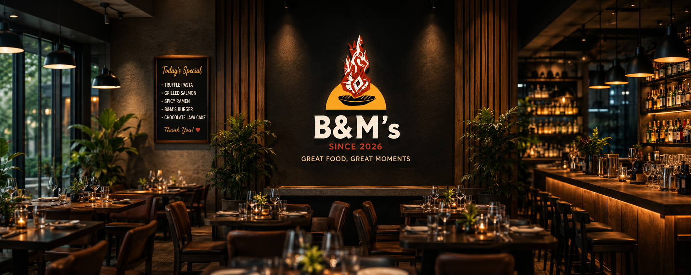
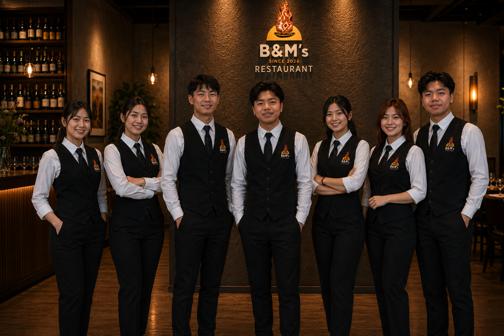
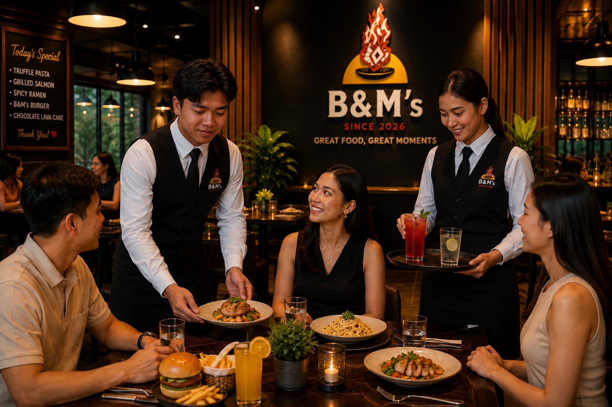

Careers at B&M's
Build Your Future with Us.
At B&M’s Restaurant, we believe that great food begins with great people. We’re always looking for passionate, hardworking, and friendly individuals who share our commitment to exceptional food and outstanding hospitality.
Whether you’re an experienced professional or just starting your career, B&M’s offers an exciting environment where you can learn, grow, and make a difference every day.

Why Work with B&M's
At B&M’s Restaurant, every team member is treated with respect and valued as part of our family. We believe that a positive workplace creates exceptional guest experiences.
We offer:
- A friendly and supportive work environment
- Opportunities for career growth and promotion
- Competitive salary and performance-based incentives
- Flexible working schedules
- Staff meals during shifts
- Hands-on training and skill development
- Safe, clean, and professional workplace
- A culture built on teamwork, respect, and excellence
Current Openings
-
Head Waiter/Waitress
Provide excellent customer service, assist guests, and ensure a memorable dining experience.
-
Kitchen Assistant
Support the kitchen team with food preparation, ingredient organization, and maintaining cleanliness.
-
Line Cook
Prepare menu items according to B&M’s quality standards while maintaining speed and consistency.
-
Restaurant Server
Take customer orders, serve food and beverages, and provide friendly table service.
-
Dishwasher
Maintain cleanliness of kitchen equipment, utensils, and workstations while supporting overall kitchen operations.
Who Are We Looking For?
We welcome candidates who are:
- Passionate about hospitality
- Friendly and customer-focused
- Reliable and punctual
- Team players with positive attitudes
- Willing to learn and grow
- Able to work in a fast-paced environment
- Dedicated to maintaining high standards of cleanliness and service
Experience is appreciated but not always required—we value enthusiasm and the willingness to learn.
Life at B&M's
Our employees are the heart of everything we do. From celebrating birthdays and achievements to learning new culinary skills and working together as one family, we strive to create a workplace where everyone feels valued and inspired.


How to Apply
Interested in joining our team?
Send your resume and a short introduction to:
or
Visit us in person during business hours to submit your application.
Please include:
- Full Name
- Contact Number
- Email Address
- Position Applying For
- Resume (if available)
Equal Opportunity
B&M’s Restaurant is proud to be an equal opportunity employer. We welcome applicants from all backgrounds and believe that diversity, respect, and teamwork make our workplace stronger.
Join The B&M's Family
Your journey begins with a single opportunity.
Come grow with us, serve with passion, and help create unforgettable dining experiences for every guest who walks through our doors.
“Together, we don’t just serve food—we create memories.”